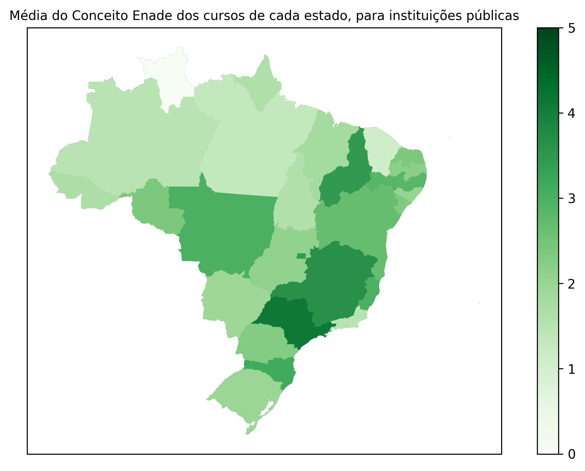

Analysis of the Average Enade Grade for Each State - Pedro¶
The analysis I will do is related to the general Enade grade obtained by courses.
The dataset have two columns related to the grades: “ Nota Padronizada - CE” and “ Conceito Enade (Contínuo)”. The difference between the two is small, so I chose to analyze based on the “ Conceito Enade (Contínuo)” column.:
>>> import createobjects
>>> import data_cleaner
>>> data_path = "./data/dataframes/resultados_cpc_2021.xlsx"
>>> raw_df = createobjects.load_data_as_df(data_path)
>>> df = data_cleaner.dataframe_cleaner(raw_df)
>>> df[" Conceito Enade (Contínuo)"].mean()
2.400735623003195
>>> df[" Nota Padronizada - CE"].mean()
2.3791958200212995
The means of the two columns are very simillar. As we can see below, the mean of the differecens between the two columns is ignorable:
>>> (df[" Conceito Enade (Contínuo)"] - df[" Nota Padronizada - CE"]).mean()
0.021539802981895634
For the map plotting, I filtered the data to reflect only public universitys. We can compare the grade’s means for the different university types:
>>> df.groupby("Categoria Administrativa")[" Conceito Enade (Contínuo)"].mean()
Categoria Administrativa
Especial 1.369682
Privada com fins lucrativos 2.100839
Privada sem fins lucrativos 2.394795
Pública Estadual 2.382922
Pública Federal 2.743884
Pública Municipal 2.078963
>>> df.groupby("Categoria Administrativa")[" Conceito Enade (Contínuo)"].std()
Categoria Administrativa
Especial 0.740122
Privada com fins lucrativos 0.778820
Privada sem fins lucrativos 0.861284
Pública Estadual 0.915827
Pública Federal 0.954435
Pública Municipal 0.918509
As we can see, they aren’t really different; All of them are between 2 and 3.
Now, to the actual plotting, we get the df containing the means for each state:
>>> createobjects.create_mean_of_general_grade(df)
Sigla da UF Conceito Enade (Contínuo)
0 AC 1.978276
1 AL 1.854321
2 AM 1.990718
3 AP 1.965472
4 BA 2.478058
5 CE 2.369505
6 DF 3.557844
7 ES 3.022967
8 GO 2.101168
9 MA 1.968111
10 MG 2.910275
11 MS 2.201744
12 MT 1.885990
13 PA 1.874467
14 PB 2.409157
15 PE 2.322109
16 PI 2.079104
17 PR 2.867315
18 RJ 3.278528
19 RN 2.665535
20 RO 1.947105
21 RR 1.816065
22 RS 2.894011
23 SC 3.247607
24 SE 2.463977
25 SP 3.201814
26 TO 1.829220
We can already see that some states excel the others considerably. We will be able to see that these states are near each other when we plot a map with this data.
After some mapa data manipulation that isn’t related to the actual data analysis, this is the result:
